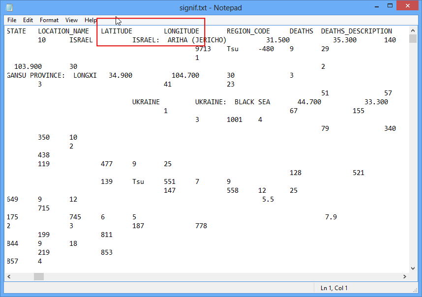
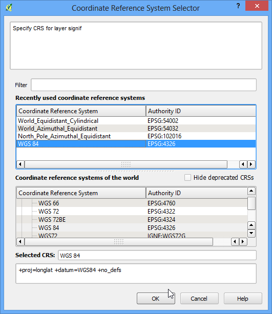
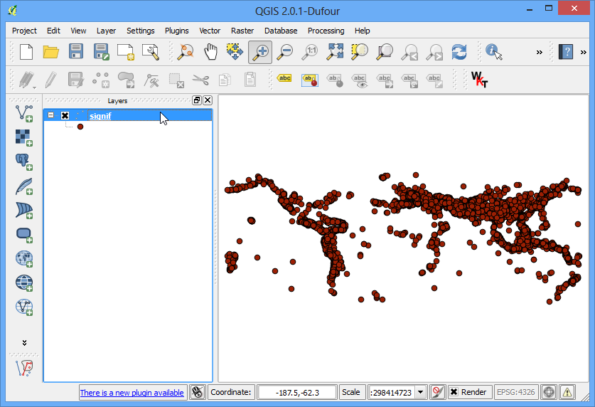

Mengimpor file Spreadsheet atau CSV
[ Download PDF A4 Letter ]
Seringkali data GIS berbentuk sebuah tabel atau spreadsheet EXcel. Dan juga, jjika anda mempunya daftar koordinat bujur/lintang, anda akan dengan mudah mengimpor data ini ke dalam project GIS anda.
Tinjauan Tugas
Kita akan mengimpor sebuah file teks tentang data gempabumi ke QGIS.
Prosedur
Periksa sumber data tabular. Untuk mengimpor data ini ke QGIS, anda harus menyimpannya sebagai file teks dan memerlukan setidaknya 2 kolom yang berisi koordinat X dan Y. Jika anda mempunyai sebuah spreadsheet, gunakan fungsi Save As di dalam program anda untuk menyimpannya sebagai file Tab Delimited File atau Comma Separated Values (CSV) . Ketika anda sudah mengekspor data dengan cara seperti ini, anda dapat membukanya di sebuah teks editor seperti Notepad untuk melihat isi file tersebut. Dalam kasus database Gempabumi Signifikan ini, data sudah tersedia dalamm bentuk file teks yang berisi lintang dan bujur dari epicenter dengan attribut lainnya. Anda akan melihat setiap field terpisah oleh sebuah TAB.

Buka QGIS. Klik .

Pada dialog Create a Layer from a Delimited Text File, klik Browse dan masukkan alamat untuk file teks yang sudah di unduh. Pada bagian File format , pilih Custom delimiters dan centrang Tab . Bagian Geometry definition akan terkumpul otomatis jika ada kecocokan koordinat X dan Y. Dalam kasus kita mereka ini adalah LONGITUDE dan LATITUDE . Anda bisa mengubahnya jika pengimporan memilih field yang salah. Klik OK.
Catatan
Adalah hal yang lumrah jika terkadang bingung mengenai koordinat X dan Y. Latitude atau Lintang mewakili posisi utara-selatan sebuah poin dan kita memanggilnya koordinat Y . Sama halnya dengan Longitude atau bujur, ini mewakili posisi timur-barat suatu poin dan ini adalah koordinat X .

Anda akan melihat sejumlah error terlihat di dialog berikutnya. Error dalam file ini terjadi karena tidak adanya field X dan Y. Anda bisa memeriksa error ini dan memperbaiki masalah yang ada pada sumber data anda. Untuk tutorial ini, anda bisa tidak menghiraukan error ini.

Berikutnya, sebuah Coordinate Reference System Selector akan bertanya kepada anda untuk memilih Sistem referensi Koordinat atau coordinate reference system. Karena koordinat gempabumi dalam lintang dan bujurm anda seharusnya memilih WGS 84 . Klik OK.

Sekarang anda akan melihat bahwa data terimpor dan tersaji pada kanvas QGIS.
